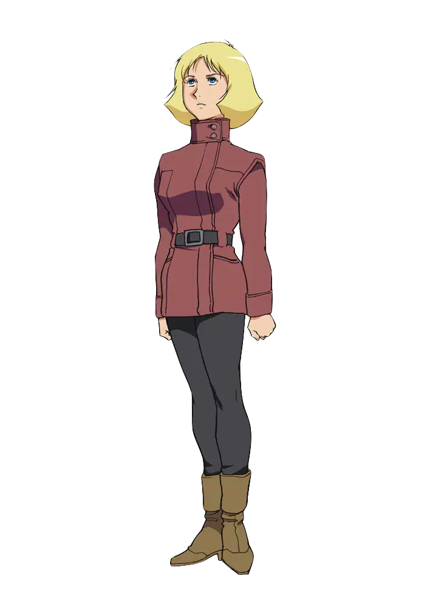
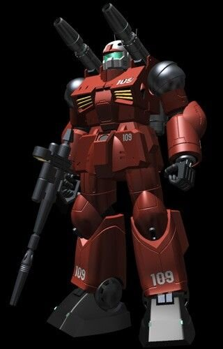

Sayla Mass
Information
Story
Age : 17 (at first appearance)
gender : female
Height : 165cm
Nationality : Earth Federation
Birthday : 62/September/12th
Favorite food : Peach
Hobby : Study about medical
Personality : Brave, masculine
Sayla Mass is a prominent character in Mobile Suit Gundam. She is a skilled pilot and member of the White Base crew, as well as the younger sister of Char Aznable. Her character arc is marked by her growth into a confident and capable soldier.
 